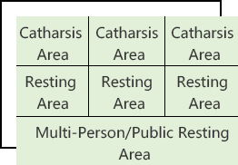

Program of Decompression Chamber for Financial Institutions
The Situation of the financial industry
A recent survey by the United Nations International Labour Organization states that: Psychological repression will be one of the most serious health problems of the 21st century. Some research institutions in the United States believe that the annual economic losses caused by employees' psychological depression to US companies are as high as $305 billion, more than five times the after-tax profits of 500 large companies. Especially in financial institutions, when employees make work mistakes due to psychological pressure, they will cause huge economic losses to the company. According to a survey conducted by a bank on the mentality of front-line employees, nearly 90% of employees feel psychologically stressed, most of them believe that if the pressure is too large, it will cause such issues: the work efficiency will be reduced, the job interest will be lacking, and the emotions will be confused. Indeed, this may lead to a series of mental health disorders and so on.
Source of Employee Stress
EMPLOYEE PRESSURE SOURCE
-

Work Pressure
The number of tasks, the degree of difficulty,
the time limit required to complete the work,
the relationship between colleagues,etc. -

Family Pressure
Such as discord with spouse,
parents being hospitalized,
children's academic performance is not good,etc. -

Social Pressure
Such as social status,
economic strength,
living conditions,
financial issues and housing issues,etc.
The Meaning of Creating the Decompression Chamber
The Decompression Chamber for Financial Institutions is built to provide a venue for every visitor (financial institution employees) to vent their inner feelings, relax and decompress. It can effectively improve employees’ self-efficacy & self-awareness, and improve work efficiency. Thereby, it will help promote the development of financial enterprises and improve the economic benefits of enterprises.
Structure of Mental Decompression Chamber


-
Catharsis Area
In this place, a flexible hitting humanoid target, a set of boxing equipment and a 3D face printer will be placed indoors, and there will be equipped with a smart tablet for Android next to the printer. (built-in an APP connected to the printer for statistics)
-
Resting Area
Guide the users in two directions, users can choose according to their own preferences: One is the state of meditation (sitting position), and the other is the state of sleep (supine position). Through the feedback of real-time brainwaves, users can be guided by the sense of vision, hearing and smell in the five senses.
According to the size of office area of different financial institutions, there are four modes

-
Individual resting decompression chamber
-

Separate Rest + Separate Drainage Decompression Chamber
-
Single Rest + Multi-Person/Public Rest Decompression Chamber
-

Multiple Individual Vents + Multiple Individual Rests + Multiple Persons / Public Resting Decompression Chambers
DECOMPRESSION PATHWAY
Predictive Effects of the Program
MORE PROPOSALS

Group Counseling: Enhance the ability of employees to cope with stress and lead a healthier life.

Sand Table Training: Alleviate the psychological pressure of employees and vent their negative emotions. At the same time, it will promote team members' ability to collaborate, enhance group integration and interpersonal skills.

Meditation Therapy: Improve brain activity, eliminate pessimism, depression, tension and other negative emotions, improve staff's physical and mental health, prevent mental illness.

Reasonable Catharsis: Vent bad emotions, release internal pressure, promote human metabolism, improve immune system function, and maintain a better working state.

Intelligent Device Systems: Targeted and conscious self-adjustment will be achieved through intelligent feedback devices that allow employees to understand their physical and psychological changes.

Establish an Internal Psychological Model: Help enterprises and individuals to achieve mental health management, performance improvement, and risk warning.

Popularization of Psychological Knowledge: Promote the psychological literacy of employees through the popularization of psychological knowledge, and encourage them to actively seek help when they encounter psychological problems.